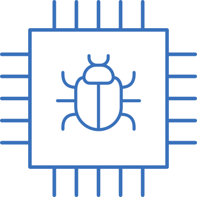

Mehran Goli
Researcher, DFKI, Bremen, Germany
Contact
Cyber-Physical SystemsBibliothekstraße 5 (MZH)
28359 Bremen
Germany
+49 421 218 63959
mehran.goli@dfki.de
mehran@uni-bremen.de
mehran.golii@gmail.com
DFKI
GitHub
Researcher, DFKI, Bremen, Germany
System-level Design and Analysis: Hardware complexity nowadays is an issue. Modern electronic circuits and systems consist of many different functional blocks including multiple (third party) Intellectual Property (IP) cores, various on-chip interconnects and memories. One possible solution to handle the complexity of the electronic circuits is to raise the level of abstraction towards the Electronic System Level (ESL). The academic and research communities have developed the ESL paradigm over the last decade to provide designers with new design methodologies, tools, and specific system design languages. By this mean, a system can be prototyped quickly and used as a reference model for lower levels of abstraction. Moreover, it provides designers with testing or evaluating the software parts of an embedded system before the actual hardware is manufactured. Although SystemC-based VPs reduce the complexity of modeling and simulation of SoC designs at the ESL, these are not the only steps for which a SystemC Virtual Prototype (VP) is implemented and used. Designers of such models may want to test new features and validate the capabilities of SoCs, i.e. to decide where to reuse existing IPs or add new (third-party) hardware blocks, perform design space exploration for the next generation of SoCs, etc. To handle each of the aforementioned tasks, accurate knowledge about the VP including both structure and behavior is necessarily required. This initial step in the design process considered as the Design Understanding phase i.e. Analyzing a given SystemC VP to know the respective components of the design (e.g. structure) as well as their relation to each other (e.g. behavior). We propose two novel SystemC-based VP analysis approaches, enabling designers to analyze a given VP from two perspectives: the debugger-based (Using GNU Debugger) and the compiler-based (using Clang) approaches.
 Formal and Simulation-based Verification: Nowadays, digital systems have become pervasive in everyday lives. At the same time, they are increasingly used in cost-critical and life-critical applications, e.g. in the automotive or in the medical sectors. This has led to the extremely heightened importance of design correctness of these systems. The much earlier availability and the significantly faster simulation speed of Virtual Prototypes (VPs) in comparison to the Register Transfer Level (RTL) hardware models are the main reasons that VP used as a reference model for an early system verification in the design process. Hence, ensuring the correctness of VPs is of the utmost importance, as undetected faults may propagate to lower levels of abstraction and become very costly to fix. We propose a set of simulation-based and semi-formal (using model checker) verification approaches which automatically validates a given SystemC VP against both the TLM-2.0 rules and its specifications
 Security Validation: Modern System-on-Chips (SoCs) are notoriously
insecure. Hence, the fundamental security feature of IP
isolation is heavily used, e.g., secured Memory Mapped
IOs (MMIOs), or secured address ranges in case of memories,
are marked as non-accessible. One way to provide
strong assurance of security is to define isolation as an information
flow policy in hardware using the notion of noninterference.
Since insecure hardware opens up the
door for attacks across the entire system stack (from software
down to hardware), the security validation process
should start as early as possible in the SoC design cycle,
i.e. at the Electronic System Level (ESL). We propose the first dynamic information flow analysis
at the ESL. Our approach allows validating the run-time
behavior of a given SoC implemented using Virtual Prototypes
(VPs) against security threat models, such as information
leakage (confidentiality) and unauthorized access
to data in a memory (integrity).
Security Validation: Modern System-on-Chips (SoCs) are notoriously
insecure. Hence, the fundamental security feature of IP
isolation is heavily used, e.g., secured Memory Mapped
IOs (MMIOs), or secured address ranges in case of memories,
are marked as non-accessible. One way to provide
strong assurance of security is to define isolation as an information
flow policy in hardware using the notion of noninterference.
Since insecure hardware opens up the
door for attacks across the entire system stack (from software
down to hardware), the security validation process
should start as early as possible in the SoC design cycle,
i.e. at the Electronic System Level (ESL). We propose the first dynamic information flow analysis
at the ESL. Our approach allows validating the run-time
behavior of a given SoC implemented using Virtual Prototypes
(VPs) against security threat models, such as information
leakage (confidentiality) and unauthorized access
to data in a memory (integrity).
 Machine Learning Techniques: Machin Learning provides systems the ability to automatically learn and improve from experience without being explicitly programmed. It focuses on the development of computer programs that can access data and use it to learn for themselves. We aim to utilize machine learning techniques for different aspects of CAD and electronic system design. We integrate a combination of static and dynamic methods
(hybrid analysis) with machine learning techniques (e.g. regression analysis) to evaluate the error-resilience portions of a given design. The hybrid analysis is
used to extract the simulation behavior of different design's portions. Then, machine learning techniques are applied to the extracted behavior of each portion to find a real approximated
model (with negligible error). The original part is replaced with its corresponding estimated model to
evaluate its impact on the final output of the design.
Machine Learning Techniques: Machin Learning provides systems the ability to automatically learn and improve from experience without being explicitly programmed. It focuses on the development of computer programs that can access data and use it to learn for themselves. We aim to utilize machine learning techniques for different aspects of CAD and electronic system design. We integrate a combination of static and dynamic methods
(hybrid analysis) with machine learning techniques (e.g. regression analysis) to evaluate the error-resilience portions of a given design. The hybrid analysis is
used to extract the simulation behavior of different design's portions. Then, machine learning techniques are applied to the extracted behavior of each portion to find a real approximated
model (with negligible error). The original part is replaced with its corresponding estimated model to
evaluate its impact on the final output of the design.
Approximate Computing: The increasing functionality of electronic systems due to the constant evolution of the market requirements makes the non-functional aspects of such systems (e.g. power, area or perfor- mance) a major concern in the design process. Approximate computing is a promising way to opti- mize these criteria by trading accuracy within acceptable limits. Since applying significant structural changes to a given design is very expensive and increases with the stage of development, the opti- mization solution needs to be incorporated into the design as early as possible. For the early design entry, modeling hardware at the Electronic System Level (ESL) design using the SystemC language is nowadays widely used in the industry. In order to apply approximation techniques to optimize a given SystemC design, designers need to know which parts of the design can be approximated. However, identifying these parts is a crucial and non-trivial starting point of approximate computing as the incorrect detection of even one critical part as resilient may result in an unacceptable output. This usually requires a large programming effort by designers, especially when exploring the design space manually. We aim to automatically identify the approximable portions of a given SystemC design, that can, in turn, be realized and mapped onto the approximate implementations by designers in the later design steps.